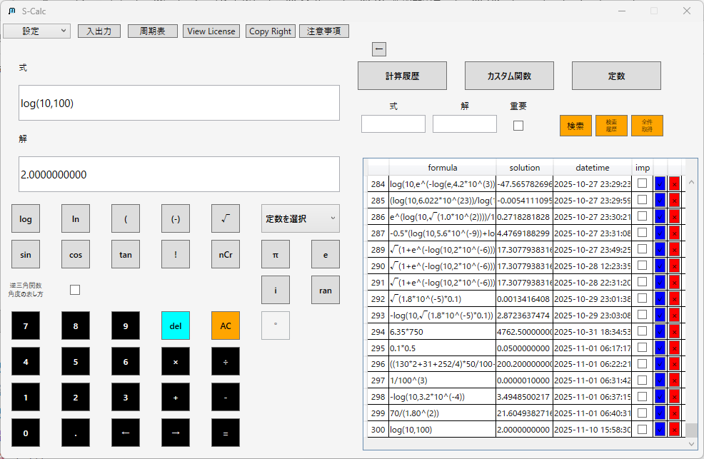
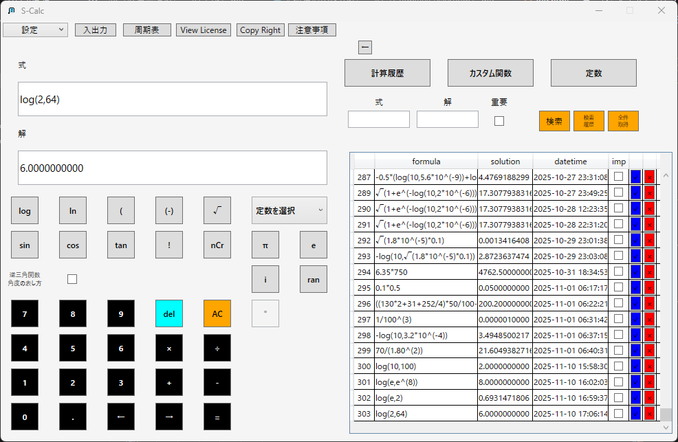
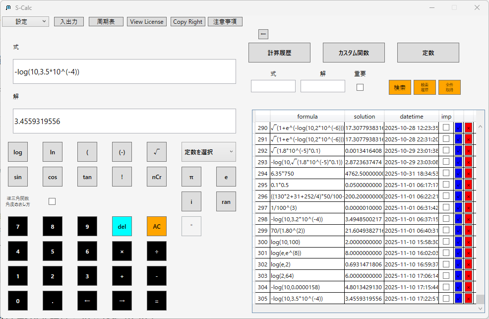
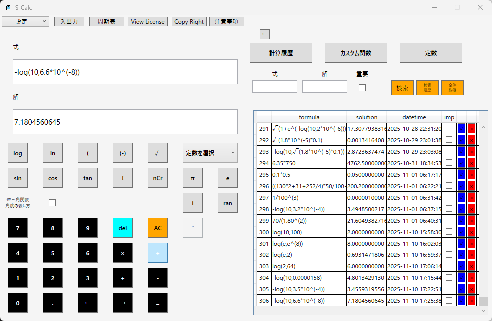
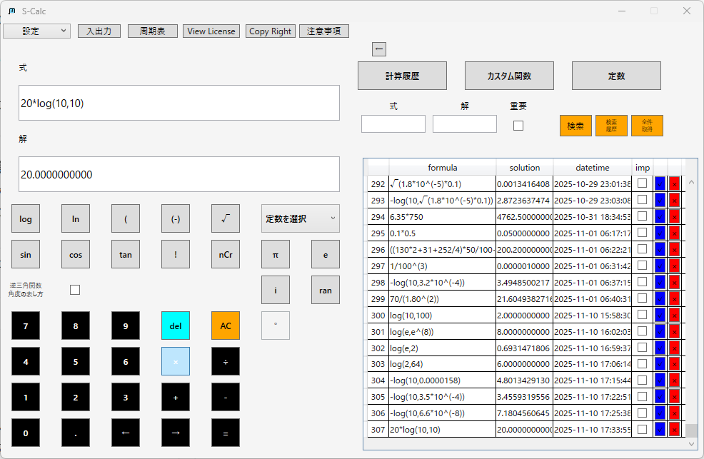
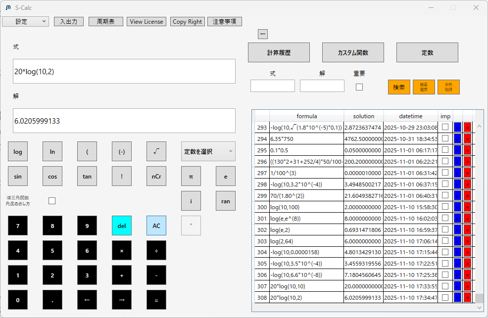
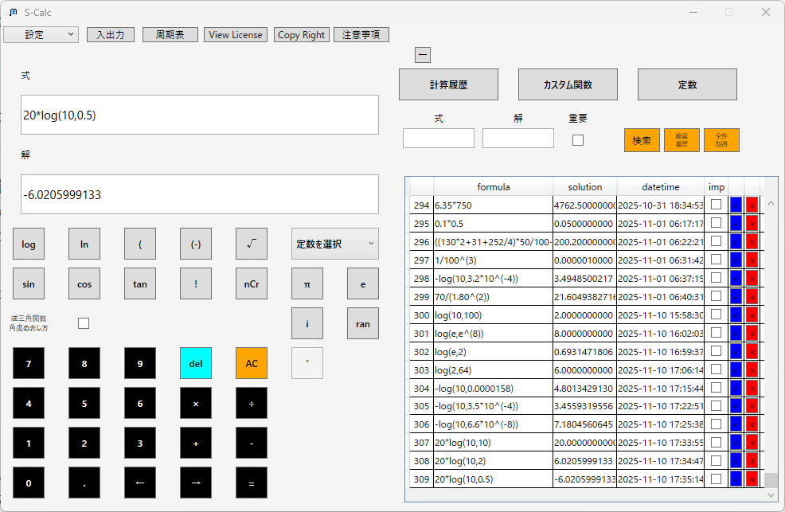
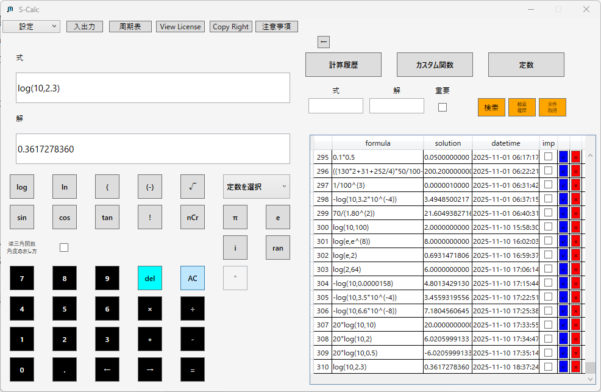
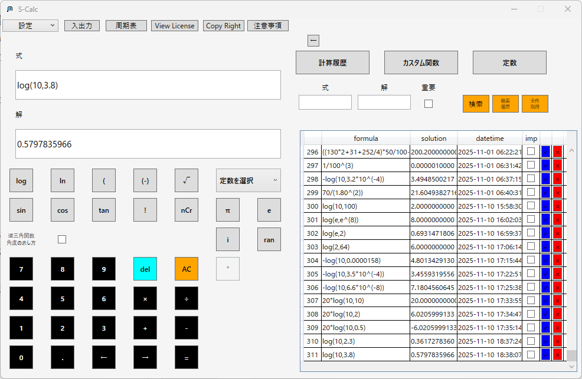
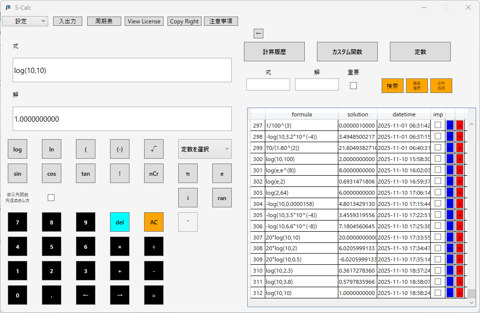

log・ln関数の使い方
S-Calcでは、常用対数（log10）や自然対数（log(e)またはln）を簡単に計算できます。
基本構文
常用対数：

自然対数：
※「ln」ボタンを押下した場合、数式のテキストボックスにlog(e,)が入力されます。
自然対数は底がネイピア数e(約2.718)であるためです。
S-Calcでは常用対数、自然対数以外の対数についても計算することが可能です。
logボタンもしくはlnボタンを押下した後に画面下部の矢印ボタンを押下することでカーソルを動かし、
底の値を削除して使用したい底を入力することが出来ます。

活用例
- 1.化学平衡定数のlog変換 化学では平衡定数Kを常用対数に変換して
- 酸解離定数 Ka = 1.8×10^(-5)の場合
- 塩基解離定数 Kb = 3.5×10^(-4)の場合
- 溶解度積 Ksp = 6.6×10^(-8)の場合
- 「log(10,x)」が常用対数
- 「-」を付けることでpK表記に変換
- 科学分野ではpH=-log10[H+]などにも応用が可能
- 2.音響学におけるデシベル計算 デシベル（dB）は音圧比などの対数スケールで表現されます。
- 音圧が10倍の場合
- 音圧が2倍の場合
- 音圧が0.5倍の場合
- エネルギー比（音圧、電圧、振幅）には20×log10を使用
- 電力比には10×log10が使われます
- 対数演算なので、倍・半分の比が線形でなくなるのが特徴
- 3.生物統計での対数変換データ解析 生物統計ではデータのばらつきを小さくし正規分布に近づけるために「log変換」を行います。
- 測定値の対数変換
- 自然対数変換
- 対数変換後の平均
- 変数のスケールを圧縮し、外れ値の影響を軽減できる。
- 医学・薬学ではlog変換平均（幾何平均）によく使われる。
「pK = -log10(K)」の形で表すことがあります（酸・塩基・溶解度など）。





S-Calcでは複数値の対数を簡単に確認できます。


